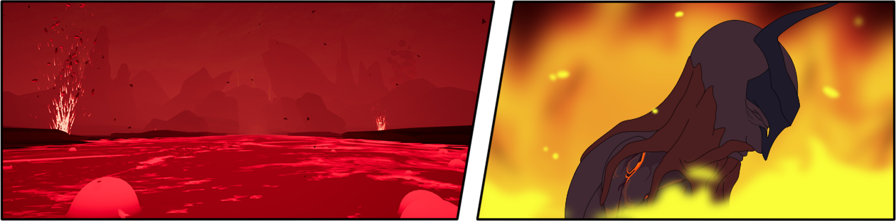
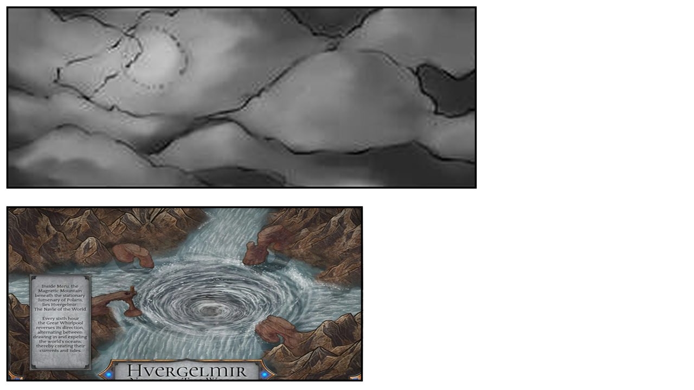
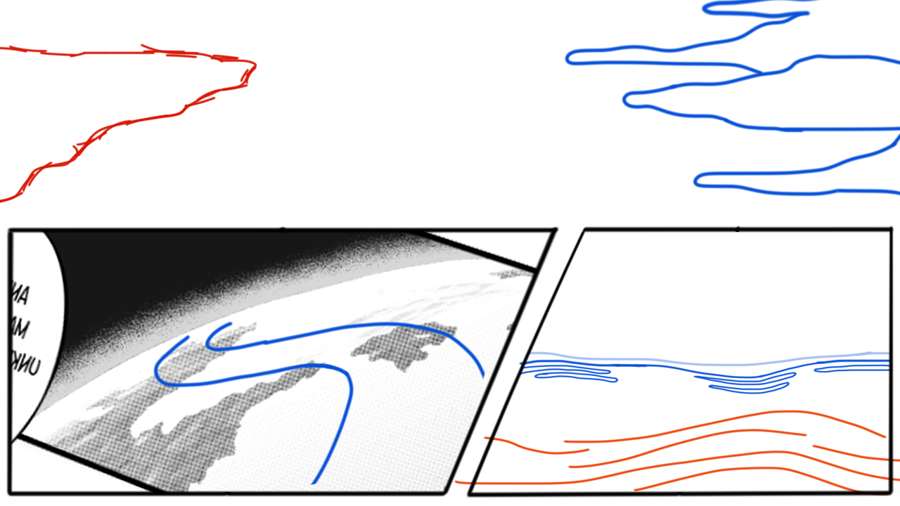
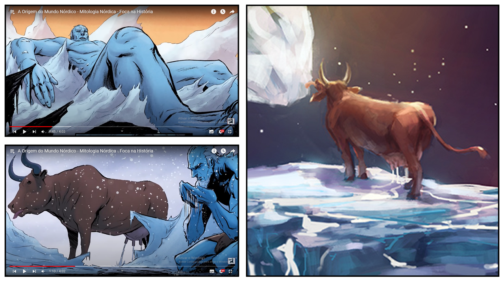
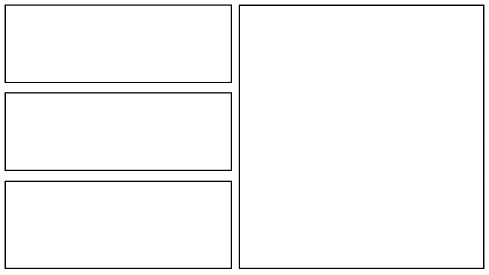
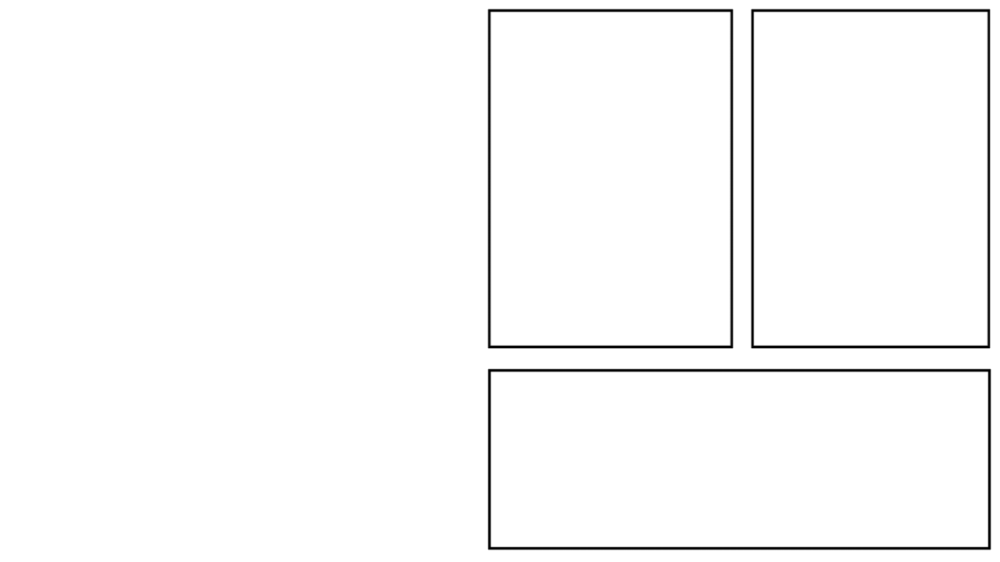
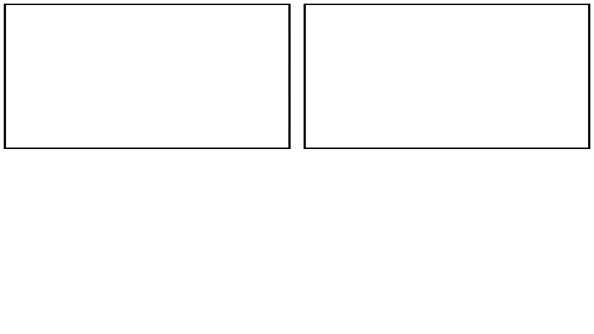

No princípio não existia nada, um grande vazio sem fim, um abismo coberto por escuridão, esse vazio foi nomeado de Ginnungagap. Esse abismo permaneceu imutável por muitas eras, mas em algum momento ele começou a apresentar mudanças, algo surgia do imenso vazio existente.
Enquanto as eras se consumiam, as temperaturas de Ginnungagap aumentavam, e do fundo do abismo começou a surgir o fogo, e do fogo o primeiro mundo, Muspelheim, a terra do fogo, lá, um amontoado de pedras flamejantes flutuavam em um mar lava, jatos poderosos cortavam os ares da superfície, nele existia somente rochas escaldantes, brasas e rios de lava, a terra ardia em Muspelheim. Ao limite desta terra ardente, surgiu Surt, um gigante feito de puro fogo, empunhando uma espada flamejante, capaz de espalhar suas chamas por mundos inteiros, ele seria o governante daquele mundo.
Mais eras e eras se passaram, e ao norte de Muspelheim começou a surgir uma névoa gélida e espessa, essa névoa logo formou o segundo mundo, Niflheim, a terra da neblina, essa terra não tinha forma, era coberta por uma névoa gélida, dominado pelo frio e pelo vento. Não era possível ver nada dentro desta neblina, o horizonte se perdia em meio ao nevoeiro acinzentado. Com o passar do tempo foi surgindo água em Niflheim e em seu núcleo formou-se um poço, um turbilhão barulhento de águas venenosas, deste local se formaram onze rios que se esvaiam em Ginnungagap.
E entre estes mundos, estava Ginnungagap, mesmo depois de eras, o vazio continuou lá, separando os dois mundos. Tempos após sua formação, Niflheim começou a ficar mais e mais frio, se tornando algo mais frio que o próprio frio, fazendo os rios congelarem e formarem imensos pedaços de gelo, este gelo foi compondo Ginnungagap e Niflheim, dando-os forma e transformando-os em imensos mundos gélidos. Com o tempo, o gelo de Ginnungagap foi encontrando o calor de Muspellheim e as enormes geleiras começaram a derreter.
Do gelo derretido começou a surgir dois seres, um era enorme e possuía uma forma humanoide, era maior que mundos inteiros, não era homem, nem mulher, mas ambos ao mesmo tempo, esse ser se chamava de Ymir, o predecessor dos jötuns. O outro ser parecia uma vaca, Ymir a chamava de Audhumla, de suas mamas jorrava leite que formavam quatro rios. Ymir, atacado pela fome, se alimentava do leite que corria pelo gelo.
Para se alimentar, Audhumla lambia uma geleira salgada, ao lamber a geleira para saciar sua fome, ela foi dando forma a um novo ser, nas primeiras lambidas da vaca, ficou a mostra apenas mechas de cabelo, nos dias seguintes, o rosto, nos próximos, o torso, até por fim, mostrar um ser vivo completo, este ser era chamado de Búri, o ancestral dos deuses.
Ao se descongelar, Ymir se encontrava em hibernação e enquanto isso, a temperatura de Muspelheim começou a aumentar, isso fez o gigante Ymir acordar e a suar, cada gota de suor tomou uma forma diferente, algumas tomaram uma forma parecida com Audhumla, outras tinham uma forma esquisita, tinham braços envoltos por algo macio e flutuavam no ar, outros não tinham pernas e braços e rastejavam pelo chão, esses eram os primeiros animais.
Enquanto dormia, Ymir gerou mais três seres, estes eram seus filhos. Das exilas de Ymir, surgiu dois jötuns, um homem e uma mulher, e o outro foi gerado pelos seus órgãos, um jötun de seis cabeças chamado Thrudgelmir. Esses seres foram compondo aquele vazio gelado, lá não era mais uma terra calma, mas sim, um lugar selvagem, onde todos lutavam por sobrevivência.
